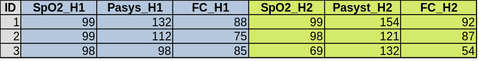

| Norme | date |
|---|---|
| France | 12/08/2023 |
| France | 12 Août 2023 |
| USA | 08-12-2023 |
| ISO 8601 | 2023-08-12 |
Un tableur comme Excel® est un outil de comptabilité analytique & n’a jamais été conçu pour stocker des données. Néanmoins ces logiciels sont puissants, versatiles, très pratiques, semblent simples d’emploi & permettent, sous certaines conditions, de stocker des tableaux simples. Un peu de réflexion & de travail préparatoire vous feront gagner beaucoup de temps.
Dans tous les cas on ne travaille jamais seul, le data-manager ou le statisticien peuvent à tout moment vous conseiller.
Pour mémoire le tableau qui arrive au statisticien est définitif, verrouillé, ne sera plus modifié donc toutes les saisies & queries sont terminées & complètement anonymisé.
Un seul tableau
Vos résultats doivent rentrer dans un seul tableau. Dans certains cas c’est impossible. Dans ce cas c’est un tableau par onglet (avec un nom clair pour l’onglet).
Par exemple, un travail sur la prise en charge d’une pathologie dans les services d’un hôpital. Vous n’allez pas res- saisir les caractéristiques du service pour chaque patient. Vous aurez donc un tableau Patients avec une variable Service qui permettra de rattacher ce patient aux données du service contenus dans un autre tableau nommé Service.
Un tableau c’est un rectangle plein
Par convention les cas (patients par ex.) sont en ligne & les variables (âge, poids…) en colonne donc un grand rectangle.
Ce tableau ne contient que les données, aucun calcul. Pas de moyenne en bas de colonnes. Si vous voulez faire des calculs, résumés etc. co- piez l’onglet & faites tout ce que vous voulez sur la copie.
| ID | age | sexe | poids | taille | imc |
|---|---|---|---|---|---|
| 1 | 45 | F | 65 | 165 | 24 |
| 2 | 65 | M | 80 | 175 | 26 |
| 3 | 35 | F | 55 | 160 | 21 |
Données manquantes
Malheureusement vous aurez des données manquantes. La case ne doit pas être vide pour autant. Il faut noter un code arbitraire pour coder ces données. Habituellement on utilise NA pour Not Available mais l’important est de toujours utiliser le même code.
des Variables
Nom des variables
Le nom de la variable va être utiliser ensuite pour écrire le code. Par exemple pour calculer la moyenne de l’âge (variable age du tableau patients):
mean(patients$age)Il donc évident qu’il doit s’agir d’un nom simple & court, pas la question posé au patient sur le questionnaire. Ce nom ne doit pas comporter d’accent, d’espace ou de caractère bizarre.
Titres des variables
Chaque variable (donc chaque colonne) doit avoir un titre & un seul. Donc UNE & une seule ligne de titre.
Les noms des variables doivent idéalement suivent certaines règles pour avoir une cohérence. Il y a deux systèmes pratiques qui portent des noms imagés :
- Grand chameau : chaque mot commence par une majuscule, pas d’espace entre les mots :
AgePatient - Petit serpent : chaque mot est séparé par un underscore (tiret bas) :
age_patient
Tableau inutilisable

Ce tableau, bien que parfaitement clair pour un être humain, est inutilisable. Quel est le nom de la variable en colonne 2 ?
Première solution – format court

Solution simple. La comparaison des PA entre H1 & H2 (test de student) va s’écrire (en simplifiant):
t.test(PA_H1,PA_H2, data = patients)Deuxième solution – format long
Exactement les mêmes données, seule la présentation change :

La comparaison des PA entre H1 & H2 (test de student) va zalors s’écrire :
t.test(PA~heure, data = patients)Les deux formats sont acceptables. Le format long est souvent plus facile à utiliser mais la conversion d’un format à l’autre est très facile.
Du codage des variables
Beaucoup de personnes, souvent beaucoup plus jeunes que moi, sont persuadées qu’un ordinateur ne peut gérer que des chiffres. Grande nouvelle, c’est faux ! Et votre tableau sera plus clair avec des intulés en clair (Homme, Femme) qu’avec des chiffres (1, 0). Même les scores ou échelles doivent être notés en texte. Les coder en numérique revient à dire que passer de 1 à 2 est ausi grave que de passer de 6 à 7. Vous en être sûr ? Pensez à un score de Glasgow par ex.
Il reste à éviter les erreurs de saisie. On voit souvent dans la même colonne des |oui| , |Oui| , |OUI| & surtout | oui| avec une espace avant ou après . On peut facilement éviter ça & gagner du temps sur la saisie en utilisant l’outil Validation de données dans Excel®. Ça vous évitera aussi des âges de 548 ans & la saisie sera beaucoup plus rapide.
Des nombres
Une variable numérique ne doit contenir que des nombres ! Et > 5 ou 5 mmol/L ne sont pas des nombres ! L’unité de mesure n’ pas à être présente sur le tableau final, ni dans le titre, ni dans les données. Utilisez la validation de données aussi pour vos variables numériques. C’est un peu de travail au début mais un gain de temps & de sécurité ensuite.
Date & Heure
Les dates & heures sont une source d’erreur constante. Il exite au moins trois maière d’écrire les dates d’usage courant (tableau6). La solution est de ne pas laisser Excel® choisir & d’entrer les dates en format texte ou de faire très attention au codage. En particulierdeux colonnes peuvent être codées différement sans que vous l’ayez de- mandé. De toute façon il faudra convertir les dates pour le logiciel de statistique donc choisissez une norme, n’importe laquelle, mais n’en changez pas en route.
De plus certains systèmes compte le temps en seconde depuis le 01/01/1900, d’autres depuis le 01/01/1904… Sans parler des différents codages selon les pays :
des Sauvegardes !
Un ordinateur n’est qu’une machine & est sujet à la panne. Un disque dur est une mécanique fragile (qu’il soit mécanique ou SSD). Une tasse de café peut se renverser. Donc on fait des sauvegardes ! Sur plusieurs supports 4 en local & à distance. Il existe des solutions simples de sauvegarde (TimeMachinel® sur MacOS® ou rsync sur Linux par ex.).
Un fichier non sauvegardé n’existe pas !
Remerciements
Une grande partie de ces conseils est très bien expliquée sur le blog de Claire Della-Vedova dont je me suis largement inspiré.
Comment préparer son tableau
Vous comprenez bien qu’on improvise pas un tableau de données. La bonne solution, un peu lourde mais si pratique, est d’écrire un tableau de ses variables (CodeBook) avec toutes les informations :